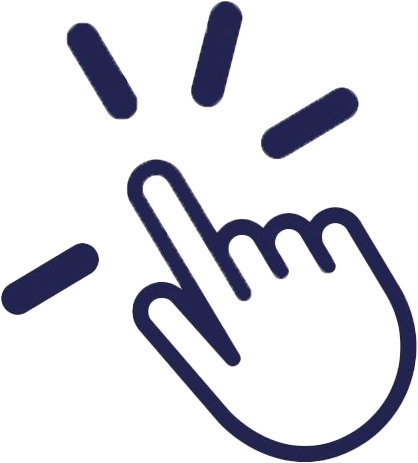
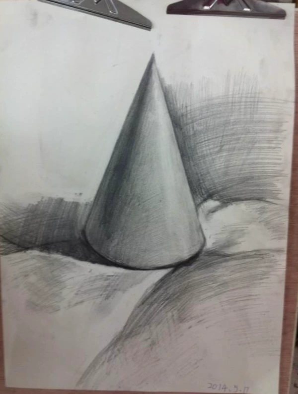
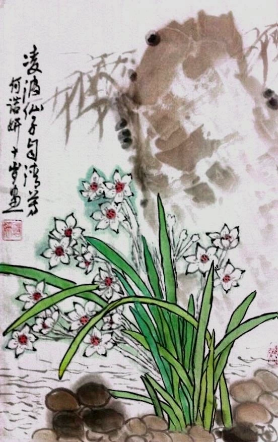
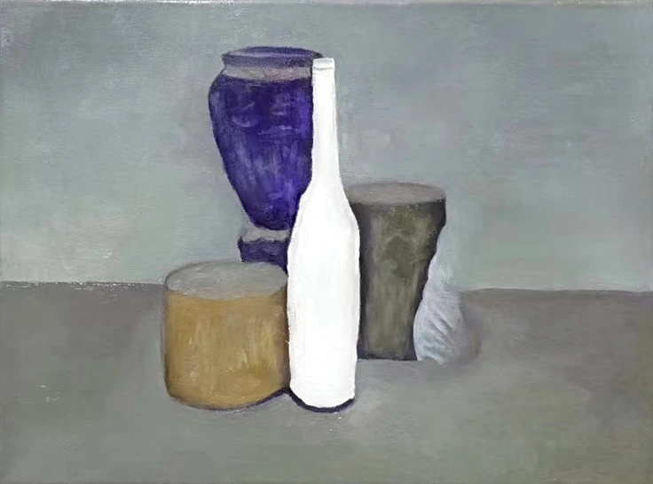
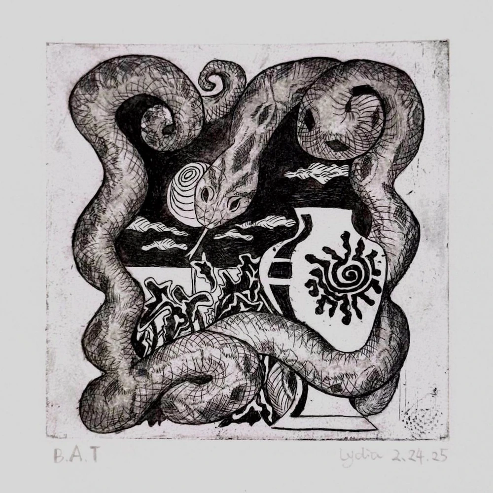
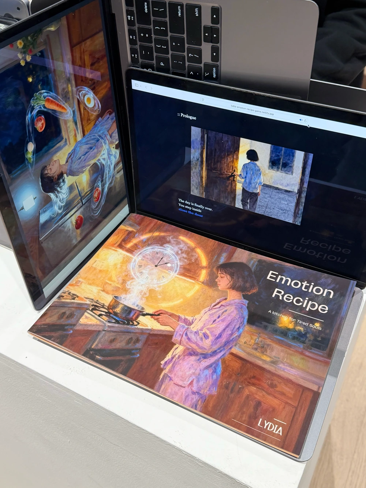
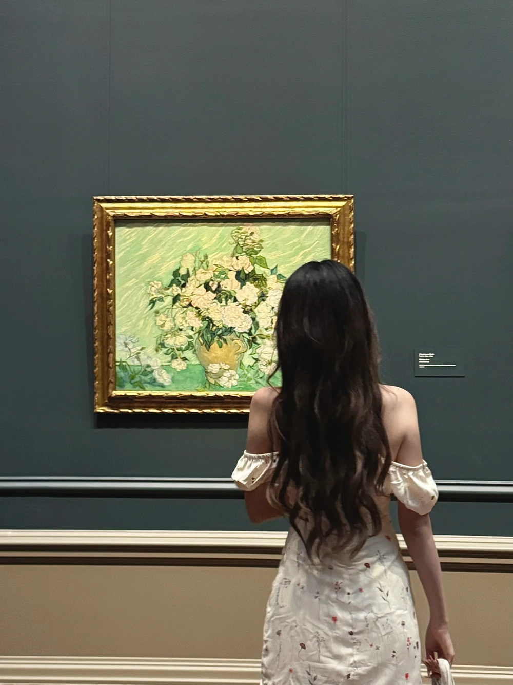

Hey there! I'm Lydia, an artist and designer with a love for both traditional and digital media. I started out with classical fine arts, but over time, I found myself drawn to digital design, interactive media, and generative art. Somewhere along the way, I realized I enjoy blending these worlds and seeing what happens when creativity meets technology. I never really left one world for another, just kept adding new ways to make.
My work is all about experimenting, exploring, and occasionally making a glorious mess before finding something magical. I believe art isn't just about what you see, it's about what you feel, experience, and sometimes accidentally spill coffee on.
Feel free to check out my work, and if you ever want to chat, collaborate, or just share ideas, I'd love to hear from you!


I officially started learning how to draw. Charcoal, shading, proportions… everything felt new and a little intimidating, but exciting.

Later this year, I met my Chinese painting teacher and was introduced to ink and brush. This was one of the first paintings I made, when I was ten.

I started exploring oil painting with a new teacher who really inspired me. It was my first time copying a full oil painting, it felt completely different from pencil and ink.
Video will be added later.
Cause of a TV series I accidentally fell in love with coding. Actually didn't really understand the logic back then, just thought it looked kind of magical.

My first attempt at printmaking! I took an elective course at university out of curiosity, and ended up fascinated by how traditional techniques like etching could feel so physical and raw.

I began experimenting seriously with AI... Not as a shortcut for making images, but as another system to question, direct, and sometimes argue with. It made me think differently about authorship and what it means to design with something that can respond.

In between classes and projects, you'll usually find me at a gallery or museum. It's where I reset, reflect, and rediscover why I love art in the first place.
✨The story continues…
and I'm still drawing the lines.